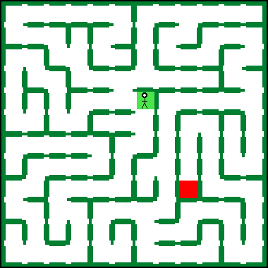
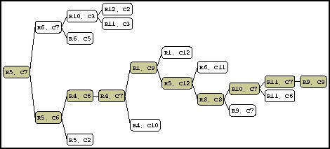

These are images of windows from the THESEUS application used by the Tulane University Computer Science Department on guided tours of the department given to visiting high school seniors and other interested parties. THESEUS is intended to be used as part of a presentation on what the study of computer science entails. It does this by showing graphically the progress and results of common search methods applied to the problem of finding the exit of a randomly created maze. THESEUS was developed in CMU Common Lisp version 16d and the Garnet X-Windows toolkit version 2.01.
R. Raymond Lang, THESEUS: Using Maze Search to Introduce Computer Science. Technical Report. Computer Science Department, Tulane University. 1992.